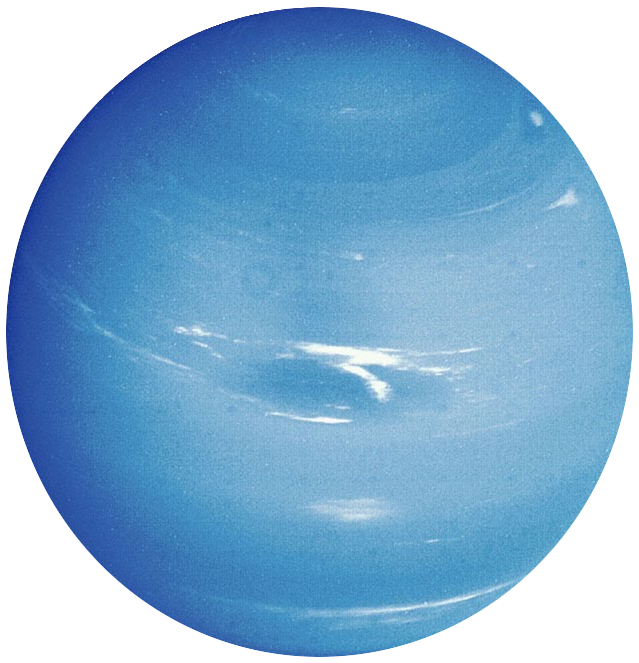

Urano

Es el tercer planeta más grande del Sistema solar y el séptimo planeta más cercano al Sol, con una distancia de 2,870,872,200 kilómetros. Posee un débil sistema de anillos muy estrechos establecidos en dos conjuntos. Los anillos interiores son más oscuros y estrechos que los exteriores, pues éstos exhiben colores brillantes.
Es un planeta gaseoso con una gran cantidad de metano en su superficie, lo que le confiere un tono azulado. Urano está constituido por un núcleo de roca, un manto helado y una capa exterior gaseosa. Carece de una superficie sólida. El 80% de su masa está compuesto de un fluido denso y caliente de materiales de hielo (agua, amoníaco y metano) que está encima del núcleo rocoso.
Un año en Urano tiene una duración de aproximadamente 84 años terrestres, que es el tiempo que tarda en completar una órbita alrededor del Sol.
Su principal característica es que su eje de rotación está inclinado de forma casi paralela a su plano orbital, por lo que la línea del ecuador está en un ángulo casi recto respecto a su órbita. Además, el Sol recorre el cielo de modo que pasa casi por los polos y así cada hemisferio permanece sin luz solar alrededor de la mitad del año de este planeta.
Urano tiene 27 satélites, cuyos nombres pertenecen a varios personajes de las obras de William Shakespeare y de Alexander Pope.
Masa: 8.6810 x 1025 kg.
Volumen: 6.83344 x 1013 km3.
Densidad: 1.270 g/cm3.
Diámetro: 51118 km.
Temperatura efectiva: -216 °C